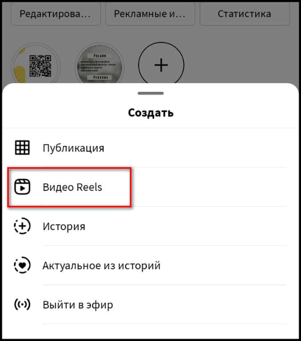
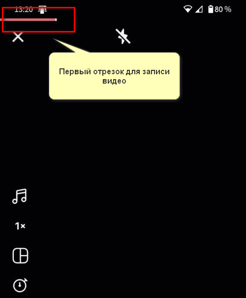
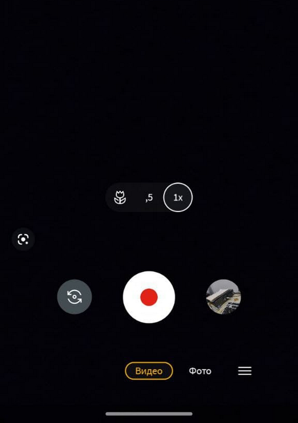
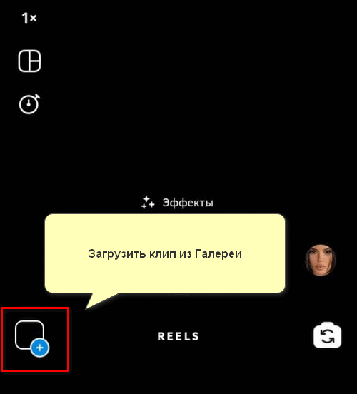
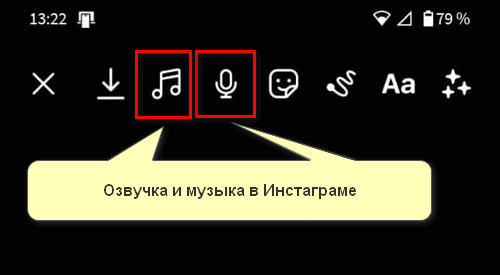

Как записать классные Рилс в Инстаграм: идеи и тренды
Снимать Рилс в Инстаграм* с телефона возможно при наличие функции, а также активном модуле камеры. Для записи нужно в настройках смартфона установить максимальное качество, настроить освещение и подобрать музыкальное сопровождение.
Как записать видео в Рилс Инстаграма*
Чтобы создать видео для Рилс, пользователь должен проверить активность этого раздела в своем профиле. Вместо значка «+» снизу появится символ в виде «видеопленки». С его помощью можно просматривать и записывать свои Reels для Инстаграма*. Также, в новой версии, функция «Добавить публикацию» выполнена в виде выпадающего списка где есть Рилс. Как записать видео:
- Нажать сверху по значку «+».
- Выбрать в списке: «Добавить Reels».

- Перейти к записи клипа.
В Рилс доступны маски, стикеры, инструменты «Карандаш» и «Текст». Отдельно есть озвучка клипа и редактор музыки, с помощью которого можно отрегулировать попадание кадров в такт.
Reels можно записать в трех вариантах длительности: 15, 30 и 60 секунд. Запись происходит частями или целым блоком, если автор вовремя не остановит.
Создать Reels частями:
- Начать запись видео – нажать еще раз по значку: «Запись».
- Остановить – поменять маску или что-то изменить в кадре.

- Продолжить запись.
Можно создавать клип из 20 частей, останавливая запись в нужных моментах. В этом случае, автора выручит функция: «Таймер» с помощью которой можно настроить автоматический запуск старта записи.
Записать через камеру
Снять красивый Рилс возможно не только в самом приложении, а и отдельно, воспользовавшись установленной «Камерой» на смартфоне. У такого способа есть преимущество в виде редактирования клипа в любом доступном или понравившемся видеоредакторе. После, видеоролик можно разместить с помощью Галереи. Как сделать видео и выложить в Reels:
- Начать записывать видео через стандартную камеру на смартфоне.
- Снять клип в несколько частей – воспользоваться установленным редактором, чтобы изменить клип.
- Перейти в Инстаграм* – выбрать: «Видео Reels».

- Снизу значок «Галерея» - указать видеоролик, который был записан автором ранее.
- Предпросмотр – Далее.

- Добавить описание и опубликовать видео.
Причем записывая клип через стандартный редактор, необязательно добавлять музыкальное сопровождение. Аудиодорожку можно выбрать на этапе редактирования в самом Инстаграме* и настроить её наложение на видеоряд.
Сделать озвучку для видео Reels в Инстаграме*
Снимать Рилс в Инстаграме* можно и с озвучкой, но она доступна на этапе предварительного просмотра. Или же, можно записывать видео и одновременно проговаривать нужные цитаты. Три способа, как сделать видео в Рилс с озвучкой:
- записывать через меню предварительного просмотра;
- сделать озвучку во время записи видео;
- добавить озвучку через стороннее приложение.
Сделать с помощью предварительного просмотра в Reels:
- Перейти к записи клипа – Далее.
- Предварительный просмотр – сверху появится значок в виде «микрофона».

- Начать озвучку по отдельный частям – остановить запись при необходимости.
- Подтвердить – посмотреть клип с записанной озвучкой.
Теперь пользователь может размещать клип в социальной сети. Пока Инстаграм* не предлагает эффектов для изменения голоса, но официальный канал разработчиков в Twitter сообщил, что эта функция будет добавлена в следующих обновлениях.
Добавить музыку в Рилс Инстаграма*
В Рилс можно добавлять музыку также, как и при озвучке: в предварительном просмотре, при создании видео или добавляя с помощью сторонних приложений. Обычно, авторы стараются добавлять аудиокомпозиции таким образом, чтобы они попадали в видеоряд. Как добавить в клип музыку:
- Перейти к записи Reels – нажать в боковом меню: «Аудио».
- Выбрать композицию, которая подходит под запись видео.
- Сделать клип – посмотреть еще раз перед размещением.
Если пользователь загружал клип с помощью Галереи или создавал его без музыкального сопровождения:
- Перейти к меню предварительного просмотра.
- Сверху значок в виде «ноты» - выбрать трек для видео.
Далее, пользователь может выделить ту часть музыки, которая идеально подойдет для видеоряда. Как и с предварительной загрузкой, можно регулировать отображение трека на экране и возможность выделить часть композиции для добавления в клип.
Идеи для классных Reels
Классный Reels набирают популярность и получают повышенный охват, в сравнение с другими разделами. В Instagram*, с 2021 года, авторы контента наблюдают проблему с охватами и активностью аудитории. Поэтому, загрузка Рилс в профиль может помочь с повышением количества подписчиков, выводом записи в ТОП. Как искать идеи для Reels в Инстаграм*:
- воспользоваться разделом и посмотреть последние записи, которые получили от 10 000 лайков;
- Pinterest и WeHeartIt. Приложения, где можно получить вдохновение и посмотреть примеры работы других авторов;
- Tik Tik. Площадка с такой же направленностью, откуда зачастую и беру идеи для своих клипов.
В Инстаграме* пока нет своих трендов, потому что площадка постепенно развивается в направлении коротких клипов. К тому же, социальная сеть предлагает нестандартный алгоритм подбора записей: по подписчкам и лайкам пользователя. Если в похожих социальных сетях используют механизм подбора новых записей, предлагая зрителям контент новых авторов, то в Инстаграме* выстроено только по интересам.
20 потрясающих трендов
Не только трендовые треки для Reels становятся причиной популярностью. Зрители обращают внимание на эстетическую сторону клипов, сценарий и качество записи. ТОП-5 наиболее популярных тем:
- психология. Короткие видео, где рассказано о психической расстройстве, нездоровых отношениях или простые практики по выстраиванию личных границ;
- скетчи и вайны. Этот формат претерпел изменения и теперь авторы контента показывают комичные образы. Например «твоя надоедливая соседка», «типичный преподаватель английского в школе»;
- эстетичные подборки. Клипы, где показана нарезка из длинного клипа под ремикс или меланхоличный трек;
- «гадания». Стандартный текст: «я создал пять видео и то, которое попалось тебе – отражает твою жизнь в этом году». После идет подборка из фотографий, где часто показывают успех, романтику и финансовое благополучение;
- творчество. Инструкции, примеры работ или запись рабочего процесса.
15 трендов для профиля в Инстаграме*:
- «взрослый я». Автор пишет на экране текст «в 10 лет я верил…, в 14 лет..» и так далее, до текущего возраста;
- Core Memory. Под этот тренд используют определенную музыкальную композицию, чтобы её получить: перейти к поиску и вписать название тренда – перейти к записи своего видео. Это милый тренд, где показывают детей, делятся приятными воспоминаниями и показывают животных;
- Un, Deux, Trois, Quatre. Французский тренд, под музыкальную композицию, которую можно найти в каталоге. Снимают тренд в режиме стоп-моушен. Обычно, это приготовление блюд или творчество, где показывают 4 этапа создания;
- instagramVSreality*. Главная идея тренда: «Инстаграм* – это нереальная жизнь», то есть показать, что фото и видео из социальной сети отредактированы или не имеют ничего общего с реальной жизнью;
- покажи свою работу. В качестве трека используют заставку «20th Century Fox»;
- «До/после». Пользователи показывают даже простые задачи, например как разобрать и аккуратно сложить свои вещи в шкаф;
- знакомая атмосфера. Обычно, это POV, где автор старается создать эффект воспоминаний у зрителей;
- подборки. Книги, фильмы, сериалы, которые могут понравиться подписчикам;
- интересные и необычные факты. То, что произошло недавно или наоборот, было забытым историческим фактов;
- «что из этого вышло». Герой клипа принимает серьезное решение и показывает, какого результата он добился. Например, решил похудеть или ежедневно выходить на пробежку;
- покажи себя в начале отношений и сейчас. Тренд подходит для влюбленных, которые состоят в отношениях как минимум несколько лет;
- помощь эксперта. Особенно популярны обзоры косметики, одежды;
- исчезновение. Герою видео говорят то, что ему не нравится и он как будто исчезает из кадра;
- воспоминания. Отличается от Memory core тем, что авторы зачастую показывают памятные для себя места;
- рекомендации. Например, как сделать красивое фото или туториал по обработке.
В профиле лучше задействовать сразу несколько форматов, но исходить из основной направленности. Например, если пользователь размещает только эстетичные снимки, то создавать меланхоличные ролики, без скетчей и вайнов.